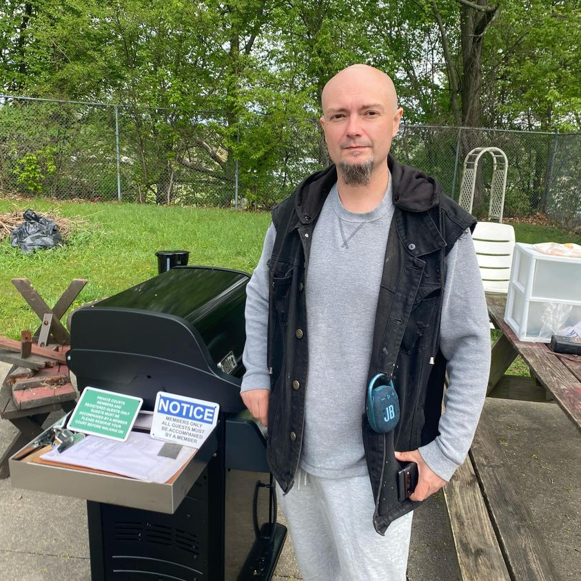

Mobile uploads
Let’s talk about Ryan Scanlon.
There was a little drama happening in the Akron homeless outreach community this week.
Apparently Ryan was saying some things that another homeless supporter didn’t like (I think the conversation was against me). Another person was standing up for me.
Then someone else went on Facebook to complain about a supporter that upset them (they didn’t mention Ryan’s name. But they used his initials in the comments of the post.)
There is this constant hum of backbiting that goes on with fellow homeless supporters. Everyone else is doing it wrong. They should be helping like how I’m helping.
This is the way of humanity. We nip at each other for countless reasons. We misplace our anger and frustration in our own lives on scapegoats of the people standing next to us. Poor people steal and kill from their neighbors not because their neighbors are the root cause of their problems. They are just the easiest thing to lash out at.
Ryan Scanlon has lived experience in the work of homelessness. I can’t think of another supporter with more lived experience than him.
I think the life he has lived has made him rough around the edges. How could it not?
But the last time I checked, he was doing really well. The last time I heard: he had an amazing girlfriend, he’s had stable housing for quite some time. And he is a truly committed dad to his 2 kids.
The picture here is of a space in Laird Land that he purchased for homeless outreach.
Every Sunday morning he makes biscuits and gravy for the east side homeless community. They are freaking delicious. He does all kinds of homeless outreach.
Ryan is doing really great.
Sometimes I block Ryan on Facebook just because I can’t take it. Although I’ve unblocked him for this post. I sometimes block people if I feel like my presence in their feed is hurting them too much or if I feel like they are hurting me or my supporters too much.
But look, I’m at a point where I don’t know what else could be said about me. Most recently, the police were surprised that we didn’t have women locked in cages in our house.
I am also being actively accused of keeping a 20-something man drugged and trapped in some homeless camp somewhere in Akron for his disability check.
Part of my spiritual journey is understanding that this life cannot be dependent on what other people think of me. People being angry at me and accusing me of horrendous things is an important part of this process for me. I’m thankful (in my best moments) for the opportunity to practice detachment of what others think of me.
Stop being mean to each other. Even when someone else is being mean. It creates a cycle of emotional and psychological disease. Perpetuating hatred of your fellow humans is always much worse than the original act of anger.
If you can’t handle it, just block them and move on. That’s the greatest gift you can give back to society.
Place: Akron, Ohio (41.0732, -81.5179)
Address: Akron, OH 44301